Mọi người dùng có một khu Cài đặt — nhóm Cá nhân ai cũng thấy, nhóm Sàn chỉ quản trị; hai đường vào; nội dung bề rộng đọc cạnh cột mục lục
Vì sao làm
Mọi người dùng có một khu Cài đặt duy nhất: nhóm «Cá nhân» (hồ sơ, cài lên màn hình chính, thông báo, máy đang đăng nhập, đăng xuất — ai cũng thấy) và nhóm «Sàn [Tên]» (người dùng, cách gọi, trường, luật chia lead — chỉ quản trị); hai đường vào: menu tài khoản hay tab Tôi trên điện thoại vào «Cá nhân», biểu tượng Cài đặt trên cột nhà vào mục đầu theo quyền; nội dung đứng cạnh cột mục lục nên không trải hết bề rộng màn.
Đã hứa
- AC-1 — Given một người mang bất kỳ tổ hợp vai nào, When vỏ dựng cột nhà trên máy tính, Then người có cột nhà (mọi vai trừ
- AC-2 — Given nhà Cài đặt đang mở trên máy tính, When cột thứ hai dựng, Then cột có nhóm «Cá nhân» với mục «Cá nhân» cho
- AC-3 — Given người đã đăng nhập, When vào Cài đặt bằng từng đường vào, Then:
- AC-4 — Given mục «Cá nhân» mở, When màn dựng, Then đầu màn có đường dẫn «Cài đặt › Cá nhân». Thân là đúng sáu nhóm dòng
- AC-5 — Given người không mang vai Quản trị sàn ở sàn đang làm, When mở thẳng địa chỉ một mục sàn (`/settings/users`
- AC-6 — Given một mục Cài đặt mở, When đọc đầu màn, Then:
- AC-7 — Given một màn bố cục Đọc (mục Cài đặt, Cá nhân, Ô nhận lead, trang tạm) trên máy tính rộng 1440, When màn dựng, Then thân rộng không quá 48rem (768px), mép trái
- AC-8 — Given người dùng điện thoại, When thanh tab dưới dựng, Then người chỉ mang vai Quản trị sàn có tab «Cài đặt sàn»
- AC-9 — Given ba quyết định đã niêm bị đổi, When đọc tài liệu trong cùng PR, Then mỗi quyết định có một mục sửa đổi ghi
Thiết kế
_acceptance/cai-dat-hop-nhat/design.md
Quyết định
- 2026-11-04 · Máy · approach · S1 — Đã tra tri thức: Khu Cài đặt hợp nhất: nhóm Cá nhân (tab Tôi) và nhóm Sàn (Cài đặt sàn, chỉ quản trị), hai đường vào, bố cục Đọc hẹp 48rem cạnh cột mục lục.Kho đã khai tri_thuc — bước thiết kế tra trang trước khi chọn.
- 2026-11-04 · Máy · approach · S1 — Một nhà Cài đặt cho mọi vai có cột nhà, tên «Cài đặt»; cột thứ hai hai nhóm: «Cá nhân» luôn có, «Sàn [Tên]» chỉ quản trị sàn thấy.Câu giao của hàng đã khai đúng hai nhóm và ai thấy nhóm nào; chủ kho chọn làm ở Cổng Đáng 04/11.
- 2026-11-04 · Máy · approach · S1 — Nhóm «Cá nhân» là một mục ở /settings/personal dựng lại đúng sáu nhóm dòng của màn Tôi hàng 38; /me chuyển về /settings/personal, tab Tôi trên điện thoại mở /settings/personal, nhãn tab giữ «Tôi».Ô cơ hội: nội dung màn Tôi hàng 38 dùng lại làm nhóm «Cá nhân», tab Tôi giữ nguyên; một nội dung một địa chỉ thì không có hai bản lệch nhau.
- 2026-11-04 · Máy · approach · S1 — Biểu tượng Cài đặt mở mục đầu theo quyền: quản trị sàn vào Người dùng như cũ, vai khác vào «Cá nhân»; menu tài khoản luôn vào «Cá nhân».Câu giao: «biểu tượng Cài đặt trên cột nhà vào mục đầu theo quyền» và «menu tài khoản … vào «Cá nhân»»; quyết định /settings mở Người dùng (vo-ung-dung) giữ cho quản trị.
- 2026-11-04 · Máy · approach · S1 — Vai không quản trị mở thẳng địa chỉ một mục sàn (/settings/users…) thì về «Cá nhân»; chặn ở máy chủ của màn, không chỉ ẩn ở cột.Câu giao khai nhóm sàn «chỉ quản trị»; ẩn ở cột mà địa chỉ vẫn mở được là chặn ở giao diện.
- 2026-11-04 · Máy · approach · S1 — Bố cục Đọc thôi trải hết bề rộng: thân giữ bề rộng đọc 48rem (token --container-doc đã có), đứng sát cột mục lục bên trái, không căn giữa; sửa ADR-0024 bằng mục sửa đổi.Ô cơ hội khai đổi ADR-0024 sang cách B «Đọc hẹp» 48rem và «nội dung đứng cạnh cột mục lục»; token 48rem đã dùng cho Hồ sơ và Dòng tin.
- 2026-11-04 · Máy · approach · S1 — Mỗi mục ghi phạm vi ngay dưới tiêu đề: mục Cá nhân «Áp cho tài khoản của bạn ở mọi sàn», mục sàn «Chỉ áp cho sàn [Tên]»; dòng Thông báo và Cài lên màn hình chính ghi thêm «trên máy này».Ô cơ hội: giao diện ghi rõ nhóm nào áp cho cả tài khoản và nhóm nào chỉ cho sàn đang làm.
- 2026-11-04 · Máy · approach · S1 — Điện thoại giữ như cũ: không có mục sàn trừ người chỉ mang vai Quản trị sàn (tab Cài đặt sàn + Tôi); tab Tôi trở thành đường vào «Cá nhân».Quyết định Hỏi-2 của vo-ung-dung giữ nguyên, hàng này chỉ đổi đích của tab Tôi.
- 2026-11-04 · Máy · approach · S1 — Telesales không có cột nhà nên chỉ vào Cài đặt qua menu tài khoản; không thêm cột nhà cho telesales.Bảng §9: telesales không có cột nhà; đổi điều đó nằm ngoài ba quyết định ô cơ hội khai.
- 2026-11-04 · Máy · descope · S1 — bỏ design-pass — màn đi khuôn sẵn (Tôi, Cài đặt sàn), đổi duy nhất là bề rộng Đọc và cột mục lục; chủ kho đã xem hình trước/sau ở phiên H 04/11; ảnh thật chụp ở lượt chấm (E11)Không nhóm mới, không đổi khối đích (divergence skipped hợp lệ theo ADR-0019 quyết định 2); hình trước/sau đã trình chủ kho trước Cổng Đáng.
- 2026-11-04 · Máy · approach · S1 — Hỏi-1 · Vai không quản trị mở địa chỉ một mục sàn: khuyến nghị chuyển về «Cá nhân» kèm một câu báo ở đầu màn «Mục này chỉ quản trị sàn mở được»; chặn ở máy chủ của màn.Phản biện (gap-probe P0): câu giao chỉ khai «chỉ quản trị», không quyết người khác thấy gì khi gõ địa chỉ — đó là nghĩa sản phẩm người dùng thấy.
- 2026-11-04 · Máy · approach · S1 — Menu tài khoản của quản trị sàn có thêm mục «Cài đặt sàn» mở /settings/users, cạnh «Cá nhân»; vai khác chỉ có «Cá nhân».Ngưỡng SỐNG của ô cơ hội: tới đúng mục trong tối đa hai lần bấm từ cả hai đường vào; qua «Cá nhân» rồi sang mục sàn là ba lần bấm (gap-probe P1).
- 2026-11-04 · Máy · approach · S1 — Tab điện thoại của người chỉ mang vai Quản trị sàn giữ nhãn «Cài đặt sàn» (mở /settings/users) cạnh «Tôi» (mở /settings/personal); nhãn nhà trên máy tính là «Cài đặt». Tab nào sáng theo đường: /settings/personal → «Tôi», mục sàn → «Cài đặt sàn».Quyết định Hỏi-2 của vỏ ghi đúng hai tab «Cài đặt sàn · Tôi»; trên điện thoại «Tôi» đã là Cá nhân nên tab kia chỉ còn là phần sàn (gap-probe P1).
- 2026-11-04 · Máy · approach · S1 — Bề rộng đọc 48rem sát trái áp cho MỌI màn bố cục Đọc: các mục Cài đặt, Cá nhân, Ô nhận lead và trang tạm — không dựng bố cục thứ tám riêng cho Cài đặt.Ô cơ hội đổi ADR-0024 ở chính bố cục Đọc (cách B «Đọc hẹp»); lint cấm màn tự đặt bề rộng nên bề rộng chỉ đặt được ở bố cục, và thêm bố cục thứ tám là một quyết định ADR khác chưa ai khai (gap-probe P1).
- 2026-11-04 · Người · seal · gate1 —
- 2026-11-04 · Máy · fix · S3 — Địa chỉ /settings/personal không có tệp trang riêng: trang mục có sẵn settings/[section] dựng thành phần CaNhan (settings/personal/ca-nhan.tsx) cho đoạn «personal», trước luật chặn mục sàn.Bộ chấm khuôn của kit 2.37.0 tính mọi page.tsx mới dưới (app) vào hai nhóm màn (trang-tam phủ mọi trang, không đọc ngoại lệ) — lệch mới oan, cùng lớp với /exports/new của hàng 43; tệp có sẵn chỉ là nợ cũ.
- 2026-11-04 · Máy · fix · S4-r1 — E10, E10b đỏ vì bản ghim bản đồ khuôn trỏ một bản trung gian của cai-dat-san.md chưa từng commit; ghim lại theo bản đã commit, bước chấm khuôn thoát 0.Bản ghim (khuon-nap.json) chạy sau một lần sửa cai-dat-san.md rồi tệp được đổi lại chữ cũ; s4-args đọc bản ghim mà kho không có băm ấy.
- 2026-11-04 · Máy · fix · S4-r1 — E11 đỏ vì máy dev vừa dựng kẹt trang ở khung xương «Đang tải lần đầu» (như hàng 43), không phải vòng chuyển hướng: trên máy đã nóng cả mười cảnh đạt. Kịch bản thêm mở lại trang tối đa ba lần × 80 giây khi trang chưa ra thân, bấm menu tài khoản tới khi mở, và đo Ô nhận lead (khuôn riêng, không qua BoCuc) ở khung đầu của thân, lệch trái tính từ mép trong vùng nội dung.Soi 04/11 trên dãy H: mở thẳng /settings/personal ổn định 30 giây, 0 lỗi trang; chạy chay-ui trên máy nóng ra đủ 10 dòng, beRongThan 768, lechTrai 0 ở mọi màn máy tính.
- 2026-11-04 · Máy · revisit · gate2 — Ngoài-1: ghi Known limitsmáy tự định tuyến theo đề xuất S4 «known-limits» — kho bật feature_loop.ngoai_n_tu_dinh_tuyen
- 2026-11-04 · Máy · revisit · gate2 — Ngoài-2: ghi Known limitsmáy tự định tuyến theo đề xuất S4 «known-limits» — kho bật feature_loop.ngoai_n_tu_dinh_tuyen
- 2026-11-04 · Máy · revisit · gate2 — Ngoài-3: ghi Known limitsmáy tự định tuyến theo đề xuất S4 «known-limits» — kho bật feature_loop.ngoai_n_tu_dinh_tuyen
- 2026-11-04 · Máy · revisit · gate2 — Ngoài-4: ghi Known limitsmáy tự định tuyến theo đề xuất S4 «known-limits» — kho bật feature_loop.ngoai_n_tu_dinh_tuyen
- 2026-11-04 · Máy · revisit · gate2 — Ngoài-5: ghi Known limitsmáy tự định tuyến theo đề xuất S4 «known-limits» — kho bật feature_loop.ngoai_n_tu_dinh_tuyen
- 2026-11-04 · Máy · revisit · gate2 — Ngoài-6: ghi Known limitsmáy tự định tuyến theo đề xuất S4 «known-limits» — kho bật feature_loop.ngoai_n_tu_dinh_tuyen
- 2026-11-04 · Máy · revisit · gate2 — Ngoài-7: chấp nhận, không sửamáy tự định tuyến theo đề xuất S4 «wont-fix» — kho bật feature_loop.ngoai_n_tu_dinh_tuyen
Bằng chứng
Các eval
| Eval | Tiêu chí | Loại | Verdict | run_id | verified_at |
|---|---|---|---|---|---|
| E1 | AC-1 | test | PASS | minted-cai-dat-hop-nhat-E1-r2 | 2026-11-04T13:03:52Z |
| E2 | AC-2 | test | PASS | minted-cai-dat-hop-nhat-E2-r2 | 2026-11-04T13:03:52Z |
| E3 | AC-3 | test | PASS | minted-cai-dat-hop-nhat-E3-r2 | 2026-11-04T13:03:52Z |
| E3b | AC-3 | test | PASS | minted-cai-dat-hop-nhat-E3b-r2 | 2026-11-04T13:03:52Z |
| E4 | AC-4 | test | PASS | minted-cai-dat-hop-nhat-E4-r2 | 2026-11-04T13:03:52Z |
| E5 | AC-5 | test | PASS | minted-cai-dat-hop-nhat-E5-r2 | 2026-11-04T13:03:52Z |
| E6 | AC-6 | test | PASS | minted-cai-dat-hop-nhat-E6-r2 | 2026-11-04T13:03:52Z |
| E7 | AC-7 | test | PASS | minted-cai-dat-hop-nhat-E7-r2 | 2026-11-04T13:03:52Z |
| E8 | AC-8 | test | PASS | minted-cai-dat-hop-nhat-E8-r2 | 2026-11-04T13:03:52Z |
| E9 | AC-9 | script | PASS | minted-cai-dat-hop-nhat-E9-r2 | 2026-11-04T13:03:52Z |
| E10 | AC-4 | script | PASS | minted-cai-dat-hop-nhat-E10-r2 | 2026-11-04T13:03:52Z |
| E10b | AC-6 | script | PASS | minted-cai-dat-hop-nhat-E10b-r2 | 2026-11-04T13:03:52Z |
| E11 | AC-7 | ui-check | PASS | minted-cai-dat-hop-nhat-E11-r2 | 2026-11-04T13:03:52Z |
Chi tiết từng eval
PASS E1 · test
AC-1: Given một người mang bất kỳ tổ hợp vai nào, When vỏ dựng cột nhà trên máy tính, Then người có cột nhà (mọi vai trừ
npm test -w @quy-hang/core ℹ duration_ms 580.499458
PASS E2 · test
AC-2: Given nhà Cài đặt đang mở trên máy tính, When cột thứ hai dựng, Then cột có nhóm «Cá nhân» với mục «Cá nhân» cho
npm test -w @quy-hang/web ℹ duration_ms 1631.939166
PASS E3 · test
AC-3: Given người đã đăng nhập, When vào Cài đặt bằng từng đường vào, Then:
npm test -w @quy-hang/core ℹ duration_ms 580.499458
PASS E3b · test
AC-3: Given người đã đăng nhập, When vào Cài đặt bằng từng đường vào, Then:
npm test -w @quy-hang/web ℹ duration_ms 1631.939166
PASS E4 · test
AC-4: Given mục «Cá nhân» mở, When màn dựng, Then đầu màn có đường dẫn «Cài đặt › Cá nhân». Thân là đúng sáu nhóm dòng
npm test -w @quy-hang/web ℹ duration_ms 1631.939166
PASS E5 · test
AC-5: Given người không mang vai Quản trị sàn ở sàn đang làm, When mở thẳng địa chỉ một mục sàn (`/settings/users`
npm test -w @quy-hang/web ℹ duration_ms 1631.939166
PASS E6 · test
AC-6: Given một mục Cài đặt mở, When đọc đầu màn, Then:
npm test -w @quy-hang/web ℹ duration_ms 1631.939166
PASS E7 · test
AC-7: Given một màn bố cục Đọc (mục Cài đặt, Cá nhân, Ô nhận lead, trang tạm) trên máy tính rộng 1440, When màn dựng, Then thân rộng không quá 48rem (768px), mép trái
npm test -w @quy-hang/web ℹ duration_ms 1631.939166
PASS E8 · test
AC-8: Given người dùng điện thoại, When thanh tab dưới dựng, Then người chỉ mang vai Quản trị sàn có tab «Cài đặt sàn»
npm test -w @quy-hang/core ℹ duration_ms 580.499458
PASS E9 · script
AC-9: Given ba quyết định đã niêm bị đổi, When đọc tài liệu trong cùng PR, Then mỗi quyết định có một mục sửa đổi ghi
node --test "_acceptance/cai-dat-hop-nhat/thu/*.test.mjs" ℹ duration_ms 230.481958
PASS E10 · script
AC-4: Given mục «Cá nhân» mở, When màn dựng, Then đầu màn có đường dẫn «Cài đặt › Cá nhân». Thân là đúng sáu nhóm dòng
design-floor-khuon.mjs --kiem --root . 15 tệp giao diện ngoài bản đồ
PASS E10b · script
AC-6: Given một mục Cài đặt mở, When đọc đầu màn, Then:
design-floor-khuon.mjs --kiem --root . 15 tệp giao diện ngoài bản đồ
PASS E11 · ui-check
AC-7: Given một màn bố cục Đọc (mục Cài đặt, Cá nhân, Ô nhận lead, trang tạm) trên máy tính rộng 1440, When màn dựng, Then thân rộng không quá 48rem (768px), mép trái
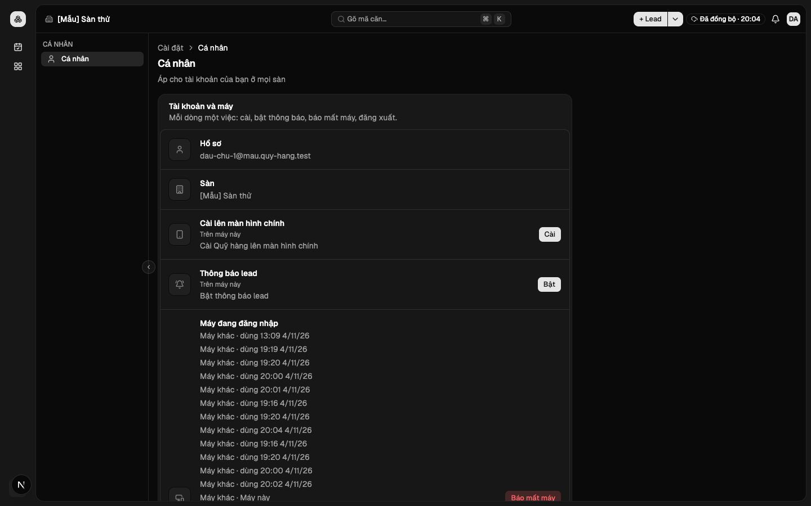
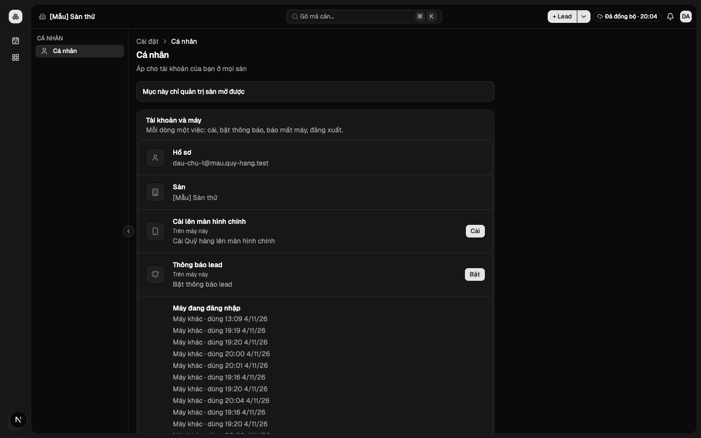
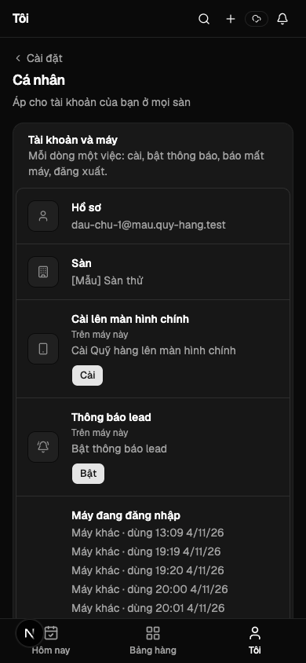
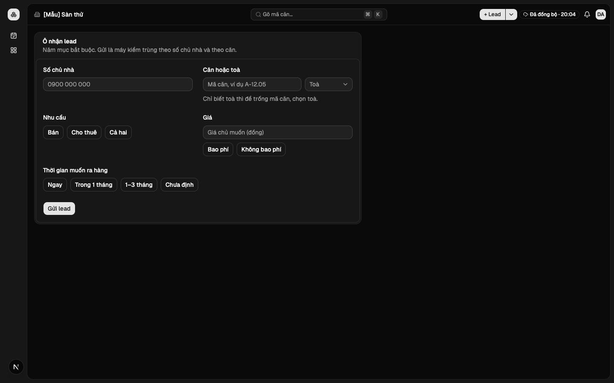
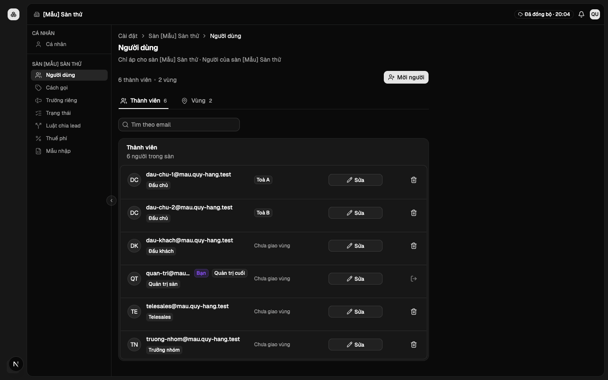
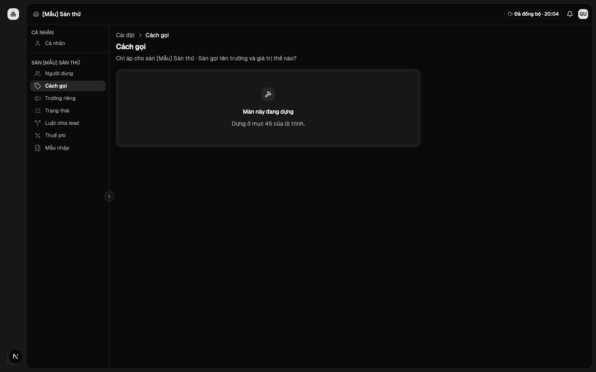
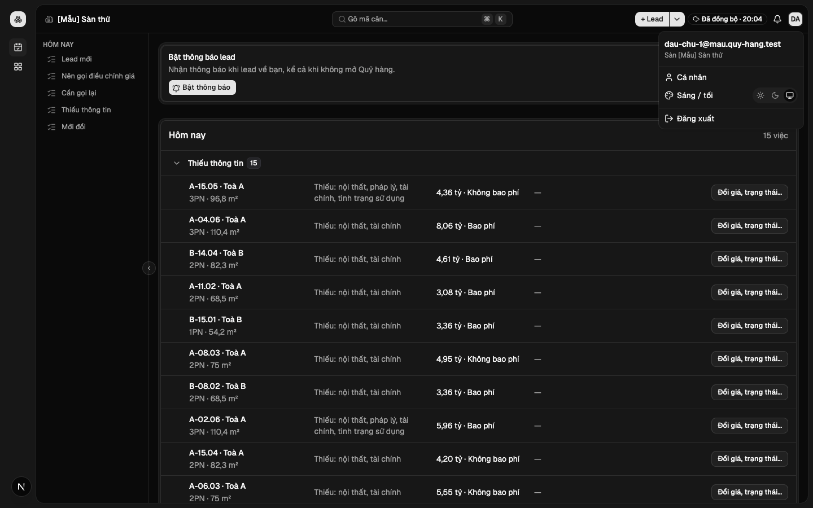
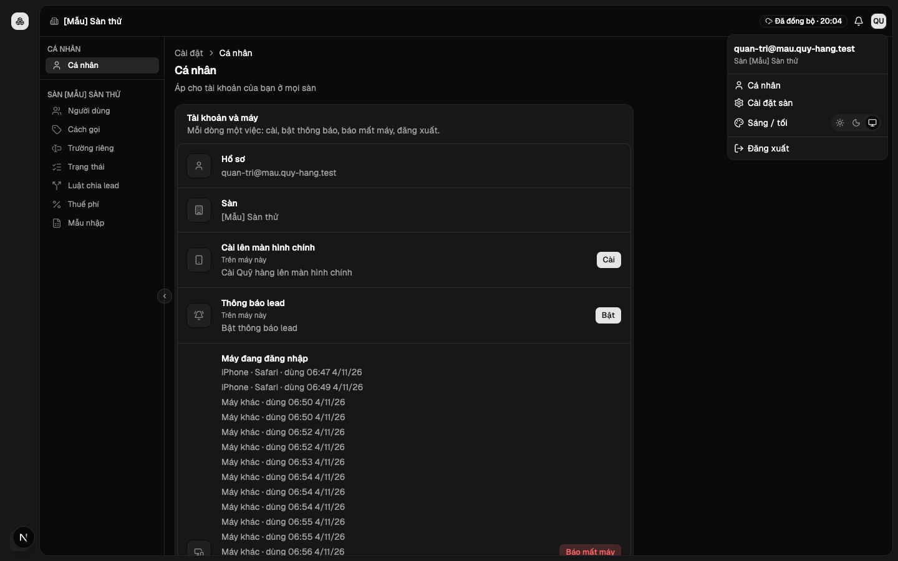

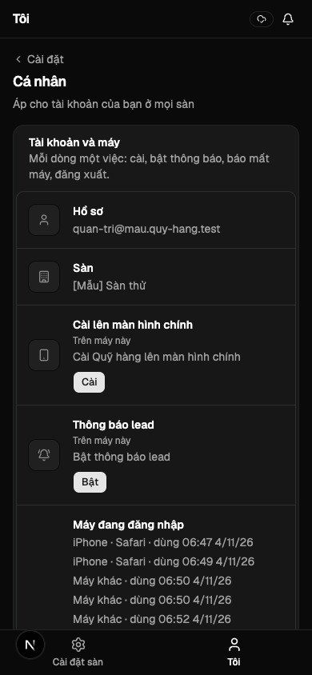
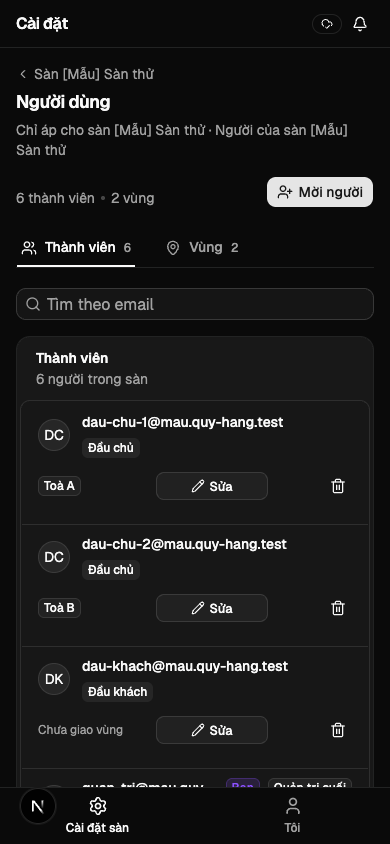
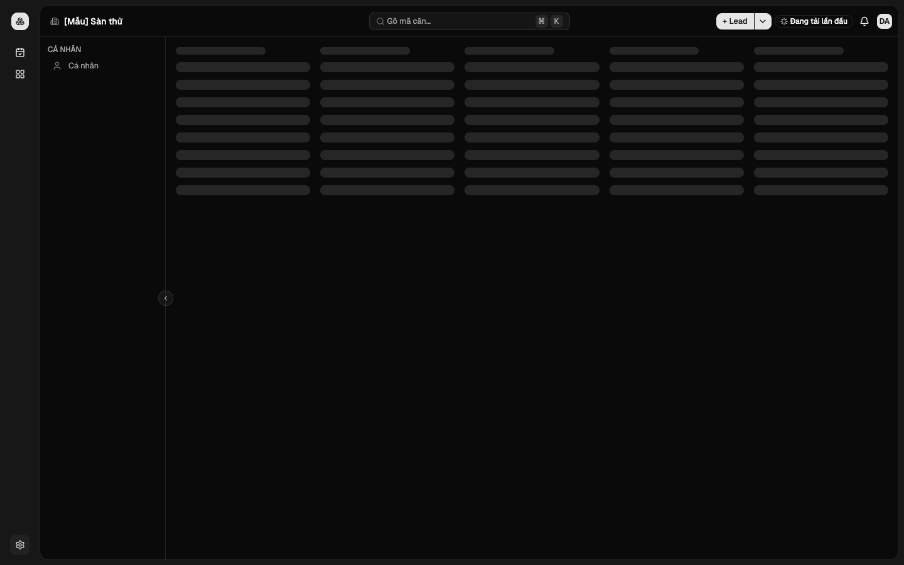
Eval không phân biệt (Analyst)
Vòng verify
- Round 1: E10, E10b failed (ghim khuôn lệch bản đã commit), E11 kẹt tải lần đầu. Returned to implementation.
- Round 2: ghim lại bản đồ khuôn theo bản đã commit, kịch bản E11 mở lại trang khi máy dev kẹt; mọi eval và lệnh suite xanh, verdict PASS.
Tài nguyên
| Khối | Tác tử | Token đầu ra |
|---|---|---|
| S4 round 1 | 18 | 54.140 |
| S4 round 2 | 17 | 45.903 |
2 lượt chấm · tổng 100.043 token
Giới hạn và ngoài hợp đồng
- Nhóm «Cá nhân» có thêm mục mới (giao diện sáng/tối, ngôn ngữ, tên hiển thị): hàng sau. Bản này dựng lại đúng sáu nhóm dòng của hàng 38.
- Nội dung thật của sáu mục sàn còn là trang tạm (Cách gọi, Trường riêng, …): thuộc hàng 45–50. Hàng này chỉ đổi đường dẫn và phạm vi ghi ở đầu màn.
- Cột nhà cho telesales: không đổi, telesales vào qua menu tài khoản.
- Mục sàn trên điện thoại cho người có thêm vai khác ngoài Quản trị sàn: giữ quyết định Hỏi-2 của vỏ.
- API Cài đặt sàn (hàng 82, dãy D): hàng này chỉ giao diện, không đổi API.
Giao
chưa ghi quan sát production
Giá trị
- Câu hỏi phép đo trả lời: người dùng tìm được cài đặt mình cần ở một chỗ, từ đường vào nào cũng tới, không phải hỏi «cài đặt ở đâu» không? — chưa đo
- Kết quả nào là SỐNG: trong phiên nghiệm thu, mỗi người dự (ít nhất một đầu chủ, một quản trị) tới đúng mục cài đặt được giao trong tối đa hai lần bấm từ cả hai đường vào; trên máy tính nhãn và nút của một dòng nằm trong một tầm mắt (khối nội dung không rộng quá 48rem). — chưa đo
- Kết quả nào là CHẾT: có người dự không tìm ra mục cài đặt cá nhân hay mục sàn sau ba lần bấm, hoặc vai không phải quản trị nhìn thấy mục cài đặt sàn. — chưa đo
- Timebox: một vòng làm, đo ở phiên nghiệm thu ngay sau khi gộp. — chưa đo